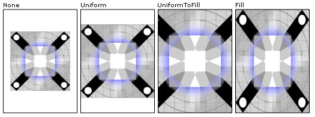

Общие сведения об обработке изображений
В этом разделе содержатся общие сведения о платформе Компонент обработки изображений Microsoft Windows Presentation Foundation. Обработка изображений в WPF позволяет разработчикам для отображения, преобразование и форматирование изображений.
Компонент обработки изображений WPF
Обработка изображений в WPF предоставляет значительные усовершенствования возможностей обработки изображений в Microsoft Windows. Возможности обработки изображений, например вывод растрового изображения или использование изображения на общем элементе управления были ранее реализованы с помощью библиотек Интерфейс графических устройств (GDI) Microsoft Windows и Microsoft Windows GDI+. Эти библиотеки API обеспечивают базовые функции обработки изображений, но в них отсутствуют такие возможности, как поддержка расширяемости кодеков и изображений высокого качества. Обработка изображений в WPF предназначен для преодоления недостатков GDI и GDI+ и предоставляет новый набор API для отображения и использования изображений в приложениях.
Существует два способа доступа к Обработка изображений в WPF API — управляемый компонент и неуправляемый компонент. Неуправляемый компонент предоставляет следующие возможности.
Модель расширяемости для новых или собственных форматов изображений.
Повышение производительности и безопасности при работе с собственными форматами изображений, включая точечный рисунок (BMP), Формат JPEG (Joint Photographics Experts Group), Формат PNG (Portable Network Graphics), Формат TIFF (Tagged Image File Format), Microsoft Windows Media Photo, Формат GIF (Graphics Interchange Format) и формат значка (ICO).
Сохранение изображений с большой глубиной цвета — до 8 бит на канал (32 бита на пиксель).
Неразрушающее масштабирование, обрезка и повороты.
Упрощенное управление цветом.
Поддержка собственных метаданных в файле.
Управляемый компонент использует неуправляемую инфраструктуру для обеспечения плавной интеграции изображений с другими функциями WPF, такими как пользовательский интерфейс, анимация и графика. Управляемый компонент также использует преимущества Windows Presentation Foundation (WPF) работы с образами модели расширяемости кодека которая позволяет автоматически распознавать новые форматы изображений в WPF приложений.
Большинство управляемых Обработка изображений в WPF API находятся в System.Windows.Media.Imaging пространства имен, хотя несколько важных типов, таких как ImageBrush и ImageDrawing находятся в System.Windows.Media пространства имен и Image находится в System.Windows.Controls пространства имен.
В этом разделе содержатся дополнительные сведения об управляемом компоненте. Дополнительные сведения о неуправляемом компоненте API см. в документации по неуправляемому компоненту обработки изображений WPF.
Форматы изображений в WPF
Для кодирования и декодирования конкретного формата мультимедиа используются кодеки. Обработка изображений в WPF включает в себя кодек для BMP, JPEG, PNG, TIFF, Windows Media Photo, GIFи значок форматы изображений. Каждый из этих кодеков позволяет приложениям декодировать и, за исключением формата ICON, кодировать изображения соответствующих форматов.
BitmapSource важным классом, используемым для декодирования и кодирования изображений. Это основной строительный блок конвейера Обработка изображений в WPF. Он представляет отдельный постоянный набор точек определенного размера и разрешения. Объект BitmapSource можно отдельных кадров из многокадрового изображения, или он может быть результатом преобразования, выполненного на BitmapSource. Он является родителем многих основных классов, используемых в WPF imaging, такие как BitmapFrame.
Объект BitmapFrame используется для хранения растровых данных формата изображения. Многие форматы изображения поддерживают использование только одного BitmapFrame, хотя форматы, такие как GIF и TIFF поддерживают несколько кадров в изображении. Кадры используются декодерами в качестве входных данных и передаются кодировщикам для создания файлов изображений.
В следующем примере показано, как BitmapFrame создается на основе BitmapSource и затем добавляются TIFF изображения.
BitmapSource image5 = BitmapSource.Create(
width,
height,
96,
96,
PixelFormats.Indexed1,
BitmapPalettes.WebPalette,
pixels,
stride);
FileStream stream5 = new FileStream("palette.tif", FileMode.Create);
TiffBitmapEncoder encoder5 = new TiffBitmapEncoder();
encoder5.Frames.Add(BitmapFrame.Create(image5));
encoder5.Save(stream5);
Warning
It looks like the sample you are looking for does not exist.
Декодирование изображений разных форматов
Декодирование изображения — это преобразование изображения в некотором формате в данные изображения, которые могут быть использованы системой. Данные изображения затем могут использоваться для отображения, обработки или кодирования в другой формат. Выбор декодера зависит от формата изображения. Выбор кодека производится автоматически, если не указан определенный декодер. Примеры в разделе Отображение изображений в WPF демонстрируют автоматическое декодирование. Декодеры пользовательских форматов, разработанные с помощью неуправляемых интерфейсов Обработка изображений в WPF и зарегистрированные в системе, автоматически участвуют в выборе декодера. Благодаря этому пользовательские форматы могут автоматически отображаться в приложениях WPF.
В следующем примере показано использование декодера точечных рисунков для декодирования изображения формата BMP.
Warning
It looks like the sample you are looking for does not exist.
// Open a Uri and decode a BMP image
Uri myUri = new Uri("tulipfarm.bmp", UriKind.RelativeOrAbsolute);
BmpBitmapDecoder decoder2 = new BmpBitmapDecoder(myUri, BitmapCreateOptions.PreservePixelFormat, BitmapCacheOption.Default);
BitmapSource bitmapSource2 = decoder2.Frames[0];
// Draw the Image
Image myImage2 = new Image();
myImage2.Source = bitmapSource2;
myImage2.Stretch = Stretch.None;
myImage2.Margin = new Thickness(20);
Warning
It looks like the sample you are looking for does not exist.
Кодирование изображений разных форматов
Кодирование изображения — это преобразование данных изображения в определенный формат. Кодированные данные изображения могут затем быть использованы для создания новых файлов изображений. Обработка изображений в WPF предоставляет кодировщики для каждого из описанных выше форматов изображения.
В следующем примере показано использование кодировщика для сохранения вновь созданного точечного рисунка.
Warning
It looks like the sample you are looking for does not exist.
FileStream stream = new FileStream("new.bmp", FileMode.Create);
BmpBitmapEncoder encoder = new BmpBitmapEncoder();
TextBlock myTextBlock = new TextBlock();
myTextBlock.Text = "Codec Author is: " + encoder.CodecInfo.Author.ToString();
encoder.Frames.Add(BitmapFrame.Create(image));
encoder.Save(stream);
Warning
It looks like the sample you are looking for does not exist.
Отображение изображений в WPF
Существует несколько способов отображения изображений в приложении Windows Presentation Foundation (WPF). Изображения могут отображаться с помощью Image элемента управления, нарисованный в визуального элемента с помощью ImageBrush, или отображаются с помощью ImageDrawing.
Использование элемента управления Image
Image — Это элемент платформы и основной способ отображения изображений в приложениях. В XAML, Image можно использовать в двух способов; синтаксис атрибутов или синтаксис свойств. В следующем примере показано, как можно отобразить изображение размером 200 пикселей в ширину, используя синтаксис атрибута и синтаксис тега свойства. Дополнительные сведения о синтаксисе атрибутов и синтаксисе свойств см. в разделе Общие сведения о свойствах зависимостей.
<!-- Simple image rendering. However, rendering an image this way may not
result in the best use of application memory. See markup below which
creates the same end result but using less memory. -->
<Image Width="200"
Source="C:\Documents and Settings\All Users\Documents\My Pictures\Sample Pictures\Water Lilies.jpg"/>
<Image Width="200">
<Image.Source>
<!-- To save significant application memory, set the DecodePixelWidth or
DecodePixelHeight of the BitmapImage value of the image source to the desired
height and width of the rendered image. If you don't do this, the application will
cache the image as though it were rendered as its normal size rather then just
the size that is displayed. -->
<!-- Note: In order to preserve aspect ratio, only set either DecodePixelWidth
or DecodePixelHeight but not both. -->
<BitmapImage DecodePixelWidth="200"
UriSource="C:\Documents and Settings\All Users\Documents\My Pictures\Sample Pictures\Water Lilies.jpg" />
</Image.Source>
</Image>
Во многих примерах используется BitmapImage объект для ссылки на файл изображения. BitmapImage является специализированным BitmapSource , оптимизированный для Язык XAML загрузки и простой способ отображения изображений в качестве Source из Image элемента управления.
В следующем примере показано, как построить изображение шириной 200 пикселей с использованием кода.
Note
BitmapImage реализует ISupportInitialize интерфейс для оптимизации инициализации на нескольких свойствах. Изменения свойств происходят только во время инициализации объекта. Вызовите BeginInit для обозначения начала инициализации и EndInit для обозначения завершения инициализации. После инициализации изменения свойств игнорируются.
// Create Image Element
Image myImage = new Image();
myImage.Width = 200;
// Create source
BitmapImage myBitmapImage = new BitmapImage();
// BitmapImage.UriSource must be in a BeginInit/EndInit block
myBitmapImage.BeginInit();
myBitmapImage.UriSource = new Uri(@"C:\Documents and Settings\All Users\Documents\My Pictures\Sample Pictures\Water Lilies.jpg");
// To save significant application memory, set the DecodePixelWidth or
// DecodePixelHeight of the BitmapImage value of the image source to the desired
// height or width of the rendered image. If you don't do this, the application will
// cache the image as though it were rendered as its normal size rather then just
// the size that is displayed.
// Note: In order to preserve aspect ratio, set DecodePixelWidth
// or DecodePixelHeight but not both.
myBitmapImage.DecodePixelWidth = 200;
myBitmapImage.EndInit();
//set image source
myImage.Source = myBitmapImage;
Warning
It looks like the sample you are looking for does not exist.
Вращение, преобразование и обрезка изображений
WPF позволяет пользователям осуществлять преобразования изображений с помощью свойств объекта BitmapImage или с помощью дополнительных BitmapSource объекты, такие как CroppedBitmap или FormatConvertedBitmap. С помощью этих преобразований можно масштабировать или поворачивать изображения, изменять формат пикселей изображения и обрезать изображения.
Вращение изображения осуществляется с помощью Rotation свойство BitmapImage. Вращение возможно только с шагом 90 градусов. В следующем примере изображение поворачивается на 90 градусов.
<Image Width="150" Margin="5" Grid.Column="0" Grid.Row="1">
<Image.Source>
<TransformedBitmap Source="/sampleImages/watermelon.jpg" >
<TransformedBitmap.Transform>
<RotateTransform Angle="90"/>
</TransformedBitmap.Transform>
</TransformedBitmap>
</Image.Source>
</Image>
// Create Image element.
Image rotated90 = new Image();
rotated90.Width = 150;
// Create the TransformedBitmap to use as the Image source.
TransformedBitmap tb = new TransformedBitmap();
// Create the source to use as the tb source.
BitmapImage bi = new BitmapImage();
bi.BeginInit();
bi.UriSource = new Uri(@"sampleImages/watermelon.jpg", UriKind.RelativeOrAbsolute);
bi.EndInit();
// Properties must be set between BeginInit and EndInit calls.
tb.BeginInit();
tb.Source = bi;
// Set image rotation.
RotateTransform transform = new RotateTransform(90);
tb.Transform = transform;
tb.EndInit();
// Set the Image source.
rotated90.Source = tb;
Warning
It looks like the sample you are looking for does not exist.
Преобразование изображения к другому формату, такие как серого выполняется с помощью FormatConvertedBitmap. В следующих примерах изображения преобразуются в Gray4.
<!-- Grayscale XAML Image -->
<Image Width="200" Grid.Column="0" Grid.Row="1">
<Image.Source>
<FormatConvertedBitmap Source="/sampleImages/rocks.jpg" DestinationFormat="Gray4" />
</Image.Source>
</Image>
//Create Image Element
Image grayImage = new Image();
grayImage.Width = 200;
grayImage.Margin = new Thickness(5);
//Create source using xaml defined resource.
FormatConvertedBitmap fcb = new FormatConvertedBitmap(
(BitmapImage)this.Resources["masterImage"],PixelFormats.Gray4,null,0);
//set image source
grayImage.Source = fcb;
Warning
It looks like the sample you are looking for does not exist.
Чтобы обрезать изображение, либо Clip свойство Image или CroppedBitmap может использоваться. Как правило, если вы просто хотите отобразить часть изображения, Clip следует использовать. Если вам нужно закодировать и сохранить обрезанное изображения, CroppedBitmap следует использовать. В следующем примере изображение обрезается с помощью свойства Clip с помощью EllipseGeometry.
<!-- Cropping an Image using Clip -->
<Image Width="200" Grid.Column="0" Grid.Row="5" Margin="5"
Source="/sampleImages/gecko.jpg">
<Image.Clip>
<EllipseGeometry Center="75,50" RadiusX="50" RadiusY="25" />
</Image.Clip>
</Image>
//Create the image for clipping
Image clipImage = new Image();
clipImage.Width = 200;
clipImage.Margin = new Thickness(5);
//Create & Set source
BitmapImage bi = new BitmapImage();
//BitmapImage.UriSource must be in a BeginInit/EndInit block
bi.BeginInit();
bi.UriSource = new Uri("pack://application:,,/sampleImages/gecko.jpg");
bi.EndInit();
clipImage.Source = bi;
//Clip the using an EllipseGeometry
EllipseGeometry clipGeometry = new EllipseGeometry(new Point(75, 50), 50, 25);
clipImage.Clip = clipGeometry;
Warning
It looks like the sample you are looking for does not exist.
Растягивание изображений
Stretch Свойство определяет, как изображение растягивается для заполнения его контейнера. Stretch Свойство принимает следующие значения, определенные Stretch перечисления:
None: Изображение не растягивается для заполнения области вывода. Если изображение больше, чем область вывода, изображение заполняет область вывода с обрезкой тех частей, которые не входят.
Fill: Изображение масштабируется в соответствии с области вывода. Так как высота и ширина изображения масштабируются независимо друг от друга, исходные пропорции изображения могут не сохраниться. То есть изображение может быть деформировано для полного заполнения контейнера вывода.
Uniform: Изображение масштабируется таким образом, чтобы полностью уместиться внутри области вывода. Пропорции изображения сохраняются.
UniformToFill: Изображение масштабируется таким образом, чтобы полностью заполнить область вывода при этом сохранить исходные пропорции изображения.
В следующем примере применяется, каждое из доступных Stretch перечислений для Image.
Ниже показаны выходные данные из примера и демонстрируется влияние различных Stretch параметров изображения.

Различные параметры растяжения
<Page xmlns="http://schemas.microsoft.com/winfx/2006/xaml/presentation"
xmlns:x="http://schemas.microsoft.com/winfx/2006/xaml" >
<DockPanel>
<Border DockPanel.Dock="Top" Background="Black">
<TextBlock Foreground="White" HorizontalAlignment="Stretch" FontSize="20">
Stretching an Image
</TextBlock>
</Border>
<Grid Name="simpleGrid" Background="{StaticResource CheckeredBrushResource}"
Margin="10"
ShowGridLines="True"
VerticalAlignment="Center"
HorizontalAlignment="Center">
<Grid.ColumnDefinitions>
<ColumnDefinition Width="175" />
<ColumnDefinition Width="175" />
<ColumnDefinition Width="175" />
<ColumnDefinition Width="175" />
</Grid.ColumnDefinitions>
<Grid.RowDefinitions>
<RowDefinition />
<RowDefinition Height="200"/>
</Grid.RowDefinitions>
<!-- Labels -->
<TextBlock Style="{StaticResource Header1}"
Grid.Column="0" Grid.Row="0">None</TextBlock>
<TextBlock Style="{StaticResource Header1}"
Grid.Column="1" Grid.Row="0">Uniform</TextBlock>
<TextBlock Style="{StaticResource Header1}"
Grid.Column="2" Grid.Row="0">UniformToFill</TextBlock>
<TextBlock Style="{StaticResource Header1}"
Grid.Column="3" Grid.Row="0">Fill</TextBlock>
<Border Grid.Column="0" Grid.Row="1" BorderThickness="1" BorderBrush="Black">
<!-- None: Image is not scaled. If image is larger than the
output area, the image will be cropped to the size of the output area.-->
<Image
Source="sampleImages/gecko.jpg"
Stretch="None" />
</Border>
<Border Grid.Column="1" Grid.Row="1" BorderThickness="1" BorderBrush="Black">
<!-- Uniform: Scale to fit output area.
Aspect ratio is preserved.-->
<Image
Source="sampleImages/gecko.jpg"
Stretch="Uniform" />
</Border>
<Border Grid.Column="2" Grid.Row="1" BorderThickness="1" BorderBrush="Black">
<!-- UniformToFill: Scale to completely fill output area.
Aspect ratio is preserved. Cropping may occur.-->
<Image
Source="sampleImages/gecko.jpg"
Stretch="UniformToFill" />
</Border>
<Border Grid.Column="3" Grid.Row="1" BorderThickness="1" BorderBrush="Black">
<!-- Fill: Scale to completely fill output area.
Aspect ratio may not be preserved.-->
<Image
Source="sampleImages/gecko.jpg"
Stretch="Fill" />
</Border>
</Grid>
</DockPanel>
</Page>
Закрашивание с помощью изображений
Изображения могут также отображаться в приложении путем рисования с помощью Brush. Кисти позволяют заполнять объекты ИП различными изображениями, начиная с просто сплошного цвета и заканчивая сложными наборами шаблонов и изображений. Для заполнения изображением используйте ImageBrush. ImageBrush — Это разновидность TileBrush , определяющей содержимое как растровое изображение. ImageBrush Отображает одно изображение, которое определяется ее ImageSource свойство. Способом растяжения изображения, выравнивания и заполнения мозаикой можно управлять, что позволяет избегать искажений, создавать шаблоны и применять другие эффекты. На следующем рисунке показан некоторые эффекты, которые могут быть обеспечены ImageBrush.
Используя кисти изображения, можно заполнять фигуры, элементы управления, текст и многое другое
Следующий пример демонстрирует рисования фона кнопки с образа с помощью ImageBrush.
<!-- Sets the button's Background property with an ImageBrush. The resulting
button has an image as its background. -->
<Button Grid.Row="3" Grid.Column="2"
Height="75" Width="100" Foreground="White" FontWeight="Bold"
HorizontalAlignment="Left">
A Button
<Button.Background>
<ImageBrush ImageSource="sampleImages\blueberries.jpg" />
</Button.Background>
</Button>
Дополнительные сведения о ImageBrush и закрашивании изображений см. в разделе Рисование с помощью изображений, рисунков и визуальных элементов.
Метаданные изображений
Некоторые файлы изображений содержат метаданные, описывающие содержимое или характеристики файла. Например, большинство цифровых фотоаппаратов создают изображения, содержащие метаданные об изготовителе и модели фотоаппарата, использованного для создания изображения. В разных форматах изображения метаданные обрабатываются по-разному. Платформа Обработка изображений в WPF предоставляет универсальный способ хранения и извлечения метаданных для всех поддерживаемых форматов изображения.
Доступ к метаданным предоставляется через Metadata свойство BitmapSource объекта. Metadata Возвращает BitmapMetadata объекта, который содержит все метаданные, содержащиеся в изображении. Эти данные могут представлять собой одну схему метаданных или комбинацию различных схем. Обработка изображений в WPF поддерживает следующие схемы метаданных изображения: Файл формата EXIF (Exchangeable image file), текст (текстовые данные PNG), IFD (image file directory — каталог файла изображения), Международный совет по прессе и телекоммуникациям (International Press Telecommunications Council, IPTC), и Платформа расширяемых метаданных (XMP).
Для упрощения процесса чтения метаданных BitmapMetadata предоставляет несколько именованных свойств, которые легко доступны такие как Author, Title, и CameraModel. Многие из этих именованных свойств могут также использоваться для записи метаданных. Дополнительная поддержка чтения метаданных обеспечивается благодаря использованию считывателя запросов метаданных. GetQuery Метод используется для извлечения считывателя запросов метаданных, предоставляя строки запроса, такие как «/ app1/exif /». В следующем примере GetQuery используется для получения текста, хранящегося в «/ Text/Description» расположение.
Warning
It looks like the sample you are looking for does not exist.
// Add the metadata of the bitmap image to the text block.
TextBlock myTextBlock = new TextBlock();
myTextBlock.Text = "The Description metadata of this image is: " + pngInplace.GetQuery("/Text/Description").ToString();
Warning
It looks like the sample you are looking for does not exist.
Для написания метаданных используется мастер написания запросов метаданных. SetQuery Получает запрос и задает требуемое значение. В следующем примере SetQuery используется для записи текста, хранящегося в «/ Text/Description» расположение.
Warning
It looks like the sample you are looking for does not exist.
Stream pngStream = new System.IO.FileStream("smiley.png", FileMode.Open, FileAccess.ReadWrite, FileShare.ReadWrite);
PngBitmapDecoder pngDecoder = new PngBitmapDecoder(pngStream, BitmapCreateOptions.PreservePixelFormat, BitmapCacheOption.Default);
BitmapFrame pngFrame = pngDecoder.Frames[0];
InPlaceBitmapMetadataWriter pngInplace = pngFrame.CreateInPlaceBitmapMetadataWriter();
if (pngInplace.TrySave() == true)
{ pngInplace.SetQuery("/Text/Description", "Have a nice day."); }
pngStream.Close();
Warning
It looks like the sample you are looking for does not exist.
Расширяемость кодеков
Основной особенностью Обработка изображений в WPF является модель расширяемости для новых кодеков изображений. Эти неуправляемые интерфейсы позволяют разработчикам кодеков интегрировать кодеки в WPF. Благодаря этому новые форматы изображений могут автоматически использоваться приложениями WPF.
Пример расширяемости API см. в разделе Пример кодека Win32. В этом примере показано создание декодера и кодировщика для пользовательского формата изображения.
Note
Чтобы система могла распознать кодек, он должен иметь цифровую подпись.